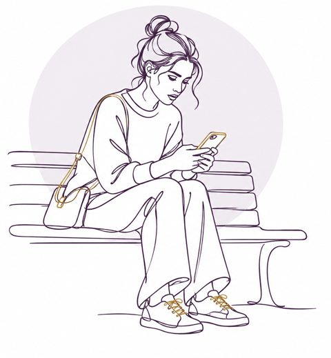

Episodio del grupo
La cadena
Lo que la hacía más vulnerable antes del evento.
El hecho concreto con el que empieza la cadena.
Cada grupo recibe un episodio distinto de Valeria. Reconstruyan la cadena eslabón por eslabón, desde lo que la hacía vulnerable hasta las consecuencias, y decidan dónde cortarla.
Valeria es un caso ficticio. Lo que escriban sobre sus pensamientos, emociones e impulsos son hipótesis que se desprenden del relato.

Lo que la hacía más vulnerable antes del evento.
El hecho concreto con el que empieza la cadena.